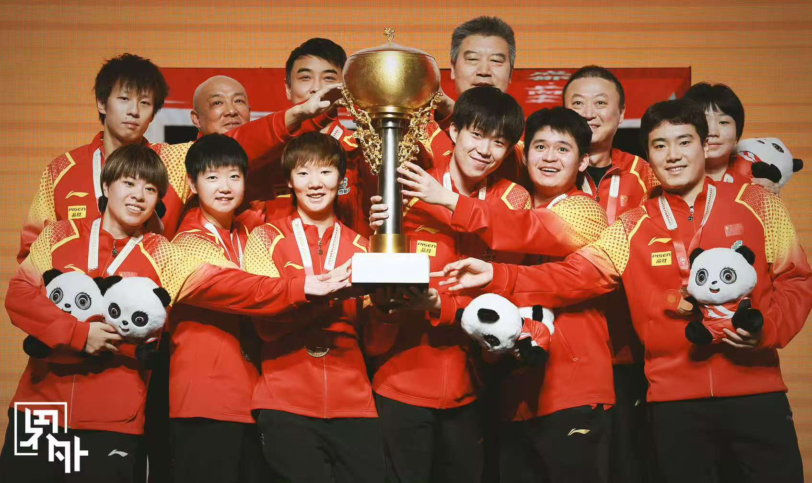

摄影
摄影是我记录生活、表达情感的方式。我喜欢用镜头捕捉自然的美丽、人物的情感和城市的脉搏。每一张照片背后都有一个故事，我希望通过我的作品传达这些故事和情感。
运动

运动是我生活中不可或缺的一部分。通过坚持运动，我不仅提高了身体素质，也培养了自己的毅力和自律能力，由内而外的蜕变让我明白：运动从不是单一的体能消耗，而是将坚持具象化的修行，让健康的体魄与坚韧的心智在汗水中完成双向成就。
竞技体育

竞技体育宛如一首激昂而复杂的交响曲，交织着美好与残酷，让人沉醉，也令人唏嘘。它让我们见证了人类挑战自我的勇气和追求卓越的精神，也让我们懂得了失败与挫折是成长路上的必修课。